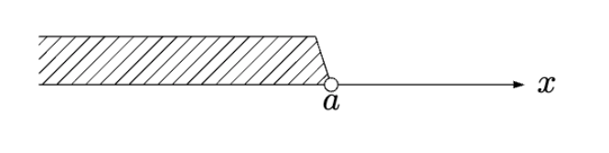
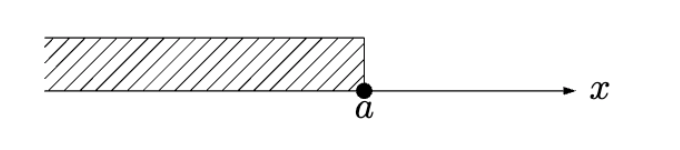
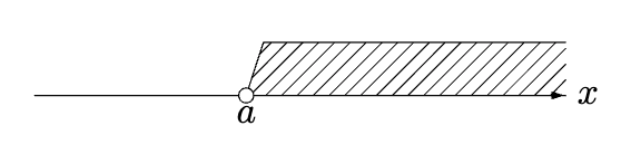
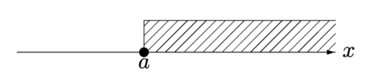
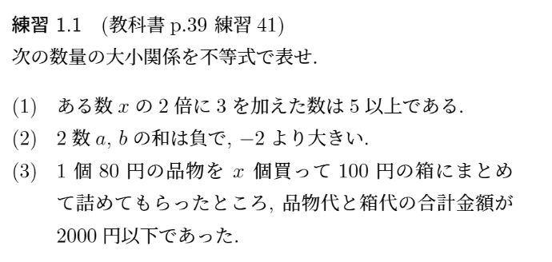
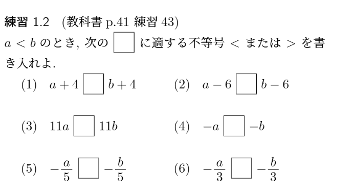
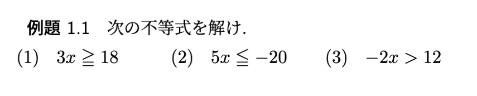
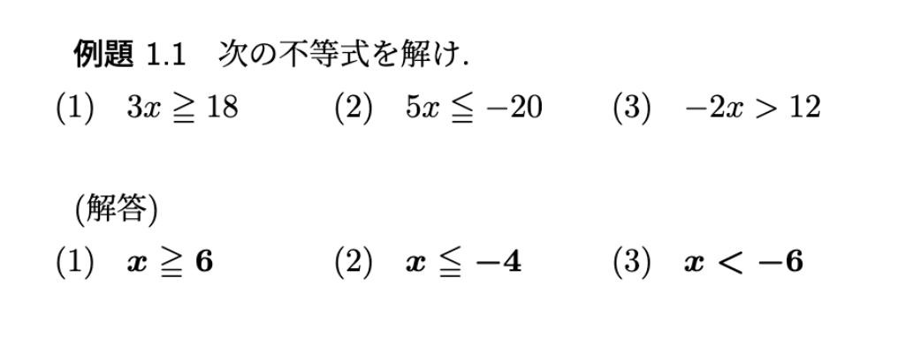
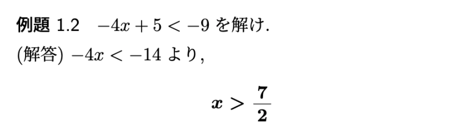
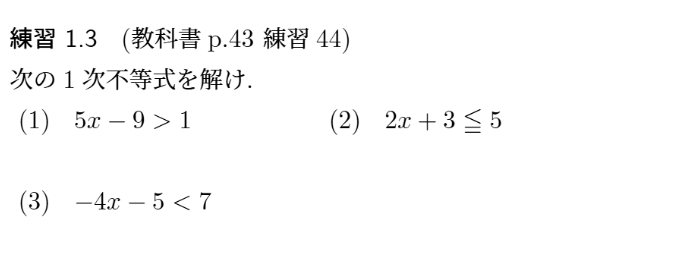

$A<B$ のとき
$A + C < B + C, \quad A - C < B - C$
$A<B$ のとき
$m>0$ ならば,
$mA < mB, \quad \frac{A}{m} < \frac{B}{m}$
$A<B$ のとき
$m<0$ ならば,
$mA > mB, \quad \frac{A}{m} > \frac{B}{m}$
負の数をかけると
不等号の向きが逆になる！
$4<6$ について,
(1)
(2)
(3)

(2) $-2 < a+b < 0$
(3) $80x+100 \leqq 2000$

3TRIAL $63$–$64$ (p.21)
不等式の解
$不等式を満たす x$
不等式を解く
$不等式のすべての解を求めること$
すべての解の集まりを, 改めて,
$不等式の解$
という.
不等式$2x<12$において,
$x=1$ や $x=5$ は解
であるが,
$x=6$ や $ x=7 $ は解でない
また, この不等式を解くと,
$x<6$




(2) $x \leqq 1$
(3) $x > -3$
3TRIAL $65$ (p.22)